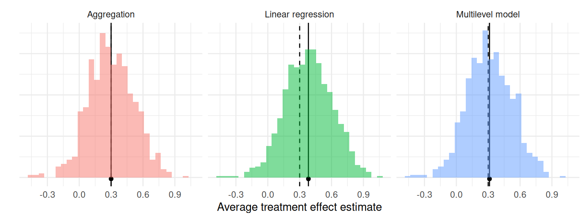
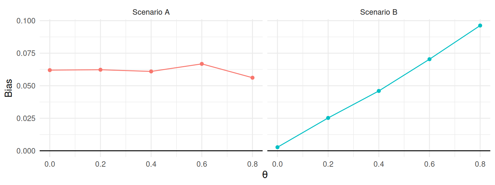

9 Performance Measures
Once we run a simulation, we end up with a pile of results to sort through. For example, Figure 9.1 depicts the distribution of average treatment effect estimates from the cluster-randomized experiment simulation we generated in Section 8.3. There are three different estimators, each with 1000 replications. Each histogram is an approximation of the sampling distribution of the estimator, meaning its distribution across repetitions of the data-generating process. Visually, we see the three estimators look about the same—they sometimes estimate too low, and sometimes estimate too high. We also see linear regression is shifted up a bit, and aggregation and MLM might have a few more outlying values. These observations are initial impressions of how well each estimator performs—that is, how close the estimators tend to get to the truth. In this chapter, we look at how to more precisely quantify and compare specific aspects of estimator performance.
A performance measure summarizes an estimator’s sampling distribution to describe how an estimator would behave on average if we were to repeat the data-generating process an infinite number of times. For example, the bias of an estimator measures the central tendency of the sampling distribution, capturing whether we are systematically off, on average, from the true parameter value.
In Figure 9.1, the black dashed lines mark the true average treatment effect of 0.3 and the solid lines with the dot mark the means of the estimators. The horizontal distance between the solid and dashed lines is the bias. This distance is nearly zero for the aggregation estimator and the multilevel model estimator, but larger for the linear regression estimator. Our performance measure of bias would be near zero for aggregation and multilevel modeling, but around 0.08 for linear regression.
Many performance measures exist. For point estimates, conventional performance measures include bias, variance, and root mean squared error. If the point estimates come with corresponding standard errors, then we may also want to evaluate how accurately the standard errors represent the true uncertainty of the point estimators; one conventional performance measures for capturing this is the relative bias of the variance estimator. For procedures that produce confidence intervals or other types of interval estimates, conventional performance measures include the coverage rate and average interval width. Finally, for inferential procedures that involve hypothesis tests (or more generally, classification tasks), conventional performance measures include Type I error rates and power. We describe each of these measures in Sections 9.1 through 9.4.
For any particular measure, the actual performance of an estimator depends on the sampling distribution, which in turn depends on the data generating process under which it is evaluated. We will therefore need to use some statistical notation to define properties of this sampling distribution. In the following, we define many of the most common measures in terms of standard statistical quantities such as the mean, variance, and other moments of the sampling distribution. Notation-wise, for a random variable \(T\) (e.g., for some estimator \(T\)), we will use the expectation operator \(\E(T)\) to denote the mean, \(\M(T)\) to denote the median, \(\Var(T)\) to denote the variance, and \(\Prob()\) to denote probabilities of specific outcomes, all with respect to the sampling distribution of \(T\). We also use \(\Q_p(T)\) to denote the \(p^{th}\) quantile of a distribution, which is the value \(x\) such that \(\Prob(T \leq x) = p\). With this notation, the median of a continuous distribution is equivalent to the 0.5 quantile: \(\M(T) = \Q_{0.5}(T)\). Using this notation we can write, for example, that the bias of \(T\) is \(\E(T) - \theta\), where \(\theta\) is the target parameter.
For some simple combinations of data-generating processes and data analysis procedures, it may be possible to derive exact mathematical formulas for some performance measures (such as exact mathematical expressions for the bias and variance of the linear regression estimator). But for many problems, the math is difficult or intractable—which is partly why we do simulations in the first place. However, simulations do not produce the exact sampling distribution or give us exact values of performance measures. Instead, simulations generate samples (usually large samples) from the the sampling distribution, and we can use these to estimate the performance measures of interest. In Figure 9.1, for example, we estimated the bias of each estimator by taking the mean of 1000 observations from its sampling distribution. If we were to repeat the whole simulation (with a different seed), then our estimates of bias would shift.
It is important to track this Monte Carlo uncertainty, i.e., uncertainty arising from using only a finite number of replications of the Monte Carlo simulation. One way to quantify this simulation uncertainty is with the Monte Carlo Standard Error (MCSE), which is the standard error of a performance estimate given a specific number of replications. Just as when we analyze real data, we can apply statistical techniques to estimate the MCSE and to generate confidence intervals for the performance measures themselves.
The magnitude of the MCSE is driven by how many replications we use: if we only use a few, we will have noisy estimates of performance and large MCSEs; if we use millions of replications, the MCSE will usually be tiny. It is important to keep in mind that the MCSE is not measuring anything about how our estimator performs. It only describes how precisely we have estimated its performance; MCSE is an artifact of how we conducted the simulation. The MCSE are also under our control: Given a desired MCSE, we can determine how many replications we would need to ensure our performance estimates have a MCSE of that size. Section 9.7 provides details about how to compute MCSEs for conventional performance measures, along with some discussion of general techniques for computing MCSE for less conventional measures.
9.1 Measures for Point Estimators
The most common performance measures used to assess a point estimator are bias, variance, and root mean squared error.
Bias compares the mean of the sampling distribution to the target parameter. Positive bias implies that the estimator tends to systematically over-state the quantity of interest, while negative bias implies that it systematically under-shoots the quantity of interest. If bias is zero (or nearly zero), we say that the estimator is unbiased (or approximately unbiased).
Variance (or its square root, the true standard error) describes the spread of the sampling distribution, or the extent to which it varies around its central tendency. All else equal, we would like estimators to have low variance (which means being more precise).
Root mean squared error (RMSE) is a conventional measure of the overall accuracy of an estimator, or its average degree of error with respect to the target parameter. For absolute assessments of performance, an estimator with low bias, low variance, and thus low RMSE is desired. In making comparisons of several different estimators, one with lower RMSE is usually preferable to one with higher RMSE. If two estimators have comparable RMSE, then the estimator with lower bias would usually be preferable.
To define these quantities more precisely, consider a generic estimator \(T\) that is targeting a parameter \(\theta\). We call the target parameter the estimand. Formally, the bias, variance, and RMSE of \(T\) are then defined as \[ \begin{aligned} \Bias(T) &= \E(T) - \theta, \\ \Var(T) &= \E\left[\left(T - \E (T)\right)^2 \right], \\ \RMSE(T) &= \sqrt{\E\left[\left(T - \theta\right)^2 \right]}. \end{aligned} \tag{9.1}\] In words, bias is the average estimate minus the truth: is it systematically too high or too low, on average? The variance is the average squared deviation of the estimator from its own mean: how much does it vary around its average estimate? Is it precise? RMSE is the square root of the average squared deviation of the estimator from the truth: how far off are we, on average, from the truth? Does it predict well?
These three measures are inter-connected. In particular, RMSE is the combination of (squared) bias and variance, as in \[ \left[\RMSE(T)\right]^2 = \left[\Bias(T)\right]^2 + \Var(T). \tag{9.2}\]
When conducting a simulation, we do not compute these performance measures directly but rather must estimate them. In most cases, in running a simulation we generate a (typically large) series of \(R\) datasets, with \(\theta\) being the true target parameter in each of them. To estimate performance, we analyze each dataset, obtaining a sample of estimates \(T_1,...,T_R\) drawn from the sampling distribution and then plug in sample quantities in place of the expectations and variances. Specifically, we estimate bias by taking \[ \widehat{\Bias}(T) = \bar{T} - \theta, \tag{9.3}\] where \(\bar{T}\) is the arithmetic mean of the replicates, \(\bar{T} = \frac{1}{R}\sum_{r=1}^R T_r\). We estimate variance by taking the sample variance of the replicates, as \[ S_T^2 = \frac{1}{R - 1}\sum_{r=1}^R \left(T_r - \bar{T}\right)^2. \tag{9.4}\] \(S_T\) (the square root of \(S^2_T\)) is an estimate of the true standard error, \(SE\), of \(T\), which is the standard deviation of the estimator across an infinite set of replications of the data-generating process.
It is important to note that in a simulation we will be able to see both the true standard error, measured across the simulation iterations, and the estimated standard errors, one for each simulation iteration. Generally, when people say “Standard Error” they actually mean estimated Standard Error, (\(\widehat{SE}\)), as we generally calculate in a real data analysis (where we have only a single realization of the data-generating process). It is easy to forget that this standard error is itself an estimate of a parameter—the true SE—and thus has its own uncertainty. We usually prefer to work with the true SE \(S_T\) rather than the sampling variance \(S_T^2\) because the former quantity has the same units as the target parameter.
Finally, the RMSE estimate can be calculated as \[ \widehat{\RMSE}(T) = \sqrt{\frac{1}{R} \sum_{r = 1}^R \left( T_r - \theta\right)^2 }. \tag{9.5}\] Often, people talk about the MSE (Mean Squared Error), which is just the square of RMSE. Just as the true SE is usually easier to interpret than the sampling variance, units of RMSE are easier to interpret than the units of MSE.
All of these performance measures depend on the scale of the parameter. For example, if an estimator is targeting a treatment impact in dollars, then the bias, SE, and RMSE of the estimator are all in dollars. (The variance and MSE would be in dollars squared; taking square roots puts these measures back on the more intepretable scale of dollars.)
In many simulations, the scale of the outcome is an arbitrary feature of the data-generating process, so the absolute magnitude of the performance measure is not meaningful. To ease interpretation of performance measures, it is useful to consider their magnitude relative to some reference amount. We generally recommend using the baseline level of variation in the outcome. For example, we might report a bias of \(0.2\sigma\), where \(\sigma\) is the standard deviation of the outcome in the population.
One way to ensure performance metrics are on a standardized scale is to generate data so the outcome has unit variance (i.e., we generate outcomes in standardized units). This automatically puts the bias, true standard error, and root mean squared error on the scale of standard deviation units, which can facilitate interpretation about what constitutes a meaningfully large bias or a meaningful difference in RMSE.
Finally, a non-linear transformation of a parameter will generally change a performance measure. For instance, suppose that \(\theta\) measures the proportion of time that something occurs. This parameter could also be given on the log-odds (logit) scale. However, because the log-odds transformation is non-linear, \[ \text{Bias}\left[\text{logit}(T)\right] \neq \text{logit}\left(\text{Bias}[T]\right), \qquad \text{RMSE}\left[\text{logit}(T)\right] \neq \text{logit}\left(\text{RMSE}[T]\right), \] and so on.
9.1.1 Comparing the Performance of the Cluster RCT Estimation Procedures
We now demonstrate the calculation of performance measures for the point estimators of average treatment effects in the cluster-RCT example. We calculate performance measures to address the following questions:
- Is the estimator systematically off? (bias)
- Is it precise? (standard error)
- Does it predict well? (RMSE)
Let us see how the three estimators compare on these measures.
Are the estimators biased?
Bias is defined with respect to a target estimand. Here we assess whether our estimates are systematically different from the \(\gamma_1\) parameter, which we defined in standardized units by setting the standard deviation of the student-level distribution of the outcome equal to one (see Section@sec-DGP-standardization). In our simulation, we generated data with a school-level ATE parameter of \(\gamma_1 = 0.30\) SDs.
ATE <- 0.30
ClusterRCT_runs %>%
group_by( method ) %>%
summarise(
mean_ATE_hat = mean( ATE_hat ),
bias = mean( ATE_hat ) - ATE
)# A tibble: 3 × 3
method mean_ATE_hat bias
<chr> <dbl> <dbl>
1 Agg 0.300 -0.000166
2 LR 0.382 0.0824
3 MLM 0.312 0.0122 There is no indication of major bias for aggregation or multi-level modeling. Linear regression, with a bias of about 0.12 SDs, appears much more biased than the other estimators. This is because the linear regression is targeting the person-level average treatment effect. Our data-generating process makes larger sites have larger effects, so the person-level average effect is going to be higher because those larger sites count more in the overall average. In contrast, our estimand is the school-level average treatment effect, or the simple average of each school’s true impact, which we have set to 0.30. The aggregation and multi-level modeling methods target this school-level average effect. If we had instead decided that the target estimand should be the person-level average effect, then we would find that linear regression is unbiased whereas aggregation and multi-level modeling are biased. It is crucial to think carefully about the appropriate target parameter and to assess performance with respect to a well-justified and clearly articulated target.
Which method has the smallest standard error?
The standard error measures the degree of variability in a point estimator. It reflects how stable an estimator is across replications of the data-generating process. We estimate the standard error for each estimator by taking the standard deviation of its set of estimates. For purposes of interpretation, it is useful to compare the standard errors to a benchmark estimator. Here, we treat the linear regression estimator as the benchmark and compute the magnitude of the SEs of each method relative to the SE of the linear regression estimator:
true_SE <-
ClusterRCT_runs %>%
group_by( method ) %>%
summarise( SE = sd( ATE_hat ) ) %>%
mutate( per_SE = SE / SE[method=="LR"] )
true_SE# A tibble: 3 × 3
method SE per_SE
<chr> <dbl> <dbl>
1 Agg 0.214 0.956
2 LR 0.224 1
3 MLM 0.213 0.953For this particular DGP, aggregation and multi-level modeling have SEs about 4 to 5% smaller than linear regression, meaning these estimates tend to be a bit less variable across the different datasets. We could therefore say aggregation and multi-level modeling are preferable to linear regression, for this context, because they are more precise. In a real data analysis, these standard errors are what we would be trying to approximate with a standard error estimator.
Which method has the smallest Root Mean Squared Error?
So far linear regression is not doing well: it has more bias and a larger standard error than the other two estimators. We can assess overall accuracy by combining these two quantities with the RMSE:
ClusterRCT_runs %>%
group_by( method ) %>%
summarise(
bias = mean( ATE_hat - ATE ),
SE = sd( ATE_hat ),
RMSE = sqrt( mean( (ATE_hat - ATE)^2 ) )
) %>%
mutate(
per_RMSE = RMSE / RMSE[method=="LR"]
)# A tibble: 3 × 5
method bias SE RMSE per_RMSE
<chr> <dbl> <dbl> <dbl> <dbl>
1 Agg -0.000166 0.214 0.214 0.897
2 LR 0.0824 0.224 0.238 1
3 MLM 0.0122 0.213 0.213 0.896We also included SE and bias for ease of reference.
RMSE takes both bias and variance into account. For aggregation and multi-level modeling, the RMSE is the same as the standard error, which makes sense because these estimators are not biased. For linear regression, the combination of bias plus increased variability yields a higher RMSE, with the standard error dominating the bias term (note how RMSE and SE are more similar than RMSE and bias). Overall, aggregation and multi-level modeling have RMSEs around 10% smaller than linear regression, meaning they tend to produce estimates that are closer to the truth than linear regression.
9.1.2 Robust Performance Measures
We have introduced bias, variance and RMSE as three core measures of performance for point estimators. However, all of these measures are sensitive to outliers in the sampling distribution. Consider an estimator that generally does well, except for an occasional large mistake. Because conventional measures are based on arithmetic averages and squares of errors, they could indicate that such an estimator performs very poorly overall, when in fact it performs very well most of the time and terribly only rarely.
If we are more curious about typical performance, then we might prefer to use other performance measures, such as the median bias and the median absolute deviation of \(T\). These are called “robust” measures because they are not strongly affect by a few extreme values.
One way to make a robust measure is to simply chop off some percent of the most extreme values, and then look at the central tendency or spread of the remaining values. For example, one robust measure of central tendency uses the \(p \times 100\%\)-trimmed mean, which ignores the estimates in the lowest and highest \(p\)-quantiles of the sampling distribution. Formally, the trimmed-mean bias is \[ \text{Trimmed-Bias}(T; p) = \E\left[ T \left| \Q_{p}(T) < T < \Q_{1 - p}(T) \right.\right] - \theta. \tag{9.6}\]
To estimate the trimmed bias, we take the mean of the middle \(1 - 2p\) fraction of the distribution: \[ \widehat{\text{Trimmed-Bias}}(T; p) = \tilde{T}_{\{p\}} - \theta. \tag{9.7}\] where (assuming \(pR\) is a whole number): \[ \tilde{T}_{\{p\}} = \frac{1}{(1 - 2p)R} \sum_{r=pR + 1}^{(1-p)R} T_{(r)} \] For a symmetric sampling distribution, the trimmed-mean bias will be the same as the conventional (mean) bias, but its estimator \(\tilde{T}_{\{p\}}\) will be less affected by outlying values (i.e., values of \(T\) very far from the center of the distribution) compared to \(\bar{T}\). However, if a sampling distribution is not symmetric, trimmed-mean bias will be a distinct performance measure, different from mean bias, that puts less emphasis on large errors compared to the conventional bias measure.
Median bias, is a special case of trimmed mean bias, with \(p = 0.5\). For median bias, we “chop off” essentially all the values, focusing on the middle one alone. Positive median bias implies that more than 50% of the sampling distribution exceeds the quantity of interest, while negative median bias implies that more than 50% of the sampling distribution fall below the quantity of interest. Formally, \[ \text{Median-Bias}(T) = \M(T) - \theta . \tag{9.8}\] where \(\M(T)\) is the median of \(T\).
We estimate median bias with the sample median, as \[ \widehat{\text{Median-Bias}}(T) = M_T - \theta , \tag{9.9}\] where, if we define \(T_{(r)}\) as the \(r^{th}\) order statistic for \(r = 1,...,R\), we have \(M_T = T_{((R+1)/2)}\) if \(R\) is odd or \(M_T = \frac{1}{2}\left(T_{(R/2)} + T_{(R/2+1)}\right)\) if \(R\) is even.
A further robust measure of central tendency is based on winsorizing the sampling distribution by truncating all errors larger than a certain maximum size. A winsorized distribution amounts to arguing that you do not care about errors beyond a certain magnitude, so anything beyond some set threshold will be treated the same as if it were exactly on the threshold. One useful threshold for truncation is to extend some multiplier of the inter-quartile range from the first and third quartiles of the sampling distribution (similar to determining outliers for a boxplot). For example, we might use: \[ \begin{aligned} L_w &= \Q_{0.25}(T) - w \times (\Q_{0.75}(T) - \Q_{0.25}(T)) \\ U_w &= \Q_{0.75}(T) + w \times (\Q_{0.75}(T) - \Q_{0.25}(T)), \end{aligned} \] where \(\Q_{0.25}(T)\) and \(\Q_{0.75}(T)\) are the first and third quartiles of the distribution of \(T\), respectively, and \(w\) is the number of inter-quartile ranges below which an observation will be treated as an outlier.1 Once we have calculated the thresholds, we compute a truncated estimate as \(X = \min\{\max\{T, L_w\}, U_w\}\). The winsorized bias, variance, and RMSE are then defined using winsorized values in place of the raw values of \(T\), as \[ \begin{aligned} \text{Bias}(X) &= \E\left(X\right) - \theta, \\ \Var\left(X\right) &= \E\left[\left(X - \E (X)\right)^2 \right], \\ \RMSE\left(X\right) &= \sqrt{\E\left[\left(X - \theta\right)^2 \right]}. \end{aligned} \tag{9.10}\] To compute estimates of the winsorized performance criteria, we substitute sample quantiles \(T_{(R/4)}\) and \(T_{(3R/4)}\) in place of \(\Q_{0.25}(T)\) and \(\Q_{0.25}(T)\), respectively, to get estimated thresholds, \(\hat{L}_w\) and \(\hat{U}_w\), find \(\hat{X}_r = \min\{\max\{T_r, \hat{L}_w\}, \hat{U}_w\}\), and compute the sample performance measures using Equations Equation 9.3, Equation 9.4, and Equation 9.5, but with \(\hat{X}_r\) in place of \(T_r\).
Alternative measures of the overall accuracy of an estimator can also be defined using quantiles. For instance, an alternative to RMSE is to use the median absolute error (MAE), defined as \[
\text{MAE} = \M\left(\left|T - \theta\right|\right).
\tag{9.11}\] Letting \(E_r = |T_r - \theta|\), the MAE can be estimated by taking the sample median of \(E_1,...,E_R\). Many other robust measures of the spread of the sampling distribution are also available, including the Rosseeuw-Croux scale estimator \(Q_n\) (Rousseeuw and Croux 1993) and the biweight midvariance (Wilcox 2022). Maronna et al. (2006) provide a useful introduction to these measures and robust statistics more broadly. The robustbase package (Maechler et al. 2024) provides R functions for calculating many of these robust statistics.
9.2 Measures for Variance Estimators
Statistics is concerned not only with how to estimate things (e.g., point estimates), but also with understanding how well we have estimated them (e.g., standard errors). Monte Carlo simulation studies can help us evaluate both these concerns. The prior section focused on assessing how well our estimators work. In this section we focus on assessing how well our uncertainty assessments work, looking in particular on estimation of the standard error.
A first order question is whether our estimated standard errors are calibrated, meaning whether they are the right size, on average. For this question we will examine the bias of the squared estimated standard error. A second order question is whether our estimated standard errors are stable, meaning that they do not vary too much from one dataset to another. For this question we evaluate estimated standard errors in terms of effective degrees of freedom or the standard error (or RMSE) of the standard error.
9.2.1 Calibration
Calibration is a relative measure, where we look at the ratio of the expected (average) value of an uncertainty estimator to the true degree of uncertainty. The relative measure removes scale, which is important because the absolute magnitude of uncertainty will depend on many features of the data-generating process, such as sample size. In particular, across different simulation scenarios (even those with the same target parameter \(\theta\)), the true standard error of an estimator \(T\) may change considerably. In other words, the ground truth changes in magnitude from one scenario to another. With a relative measure, we can make statements such as “Our standard errors are 10% too large, on average,” which are easy to interpret. The relative measures lets us sidestep some of the complexity of dealing with wide variation in the magnitude of the ground truth.
Typically, we assess performance for variance estimators (\(\widehat{SE^2}\)) rather than standard error estimators. There are a few reasons it is more common to work with variance rather than standard error. First, in practice, so-called unbiased standard errors are not actually unbiased, whereas variance estimators might be.2 For linear regression, for example, the classic standard error estimator is an unbiased variance estimator, but the standard error estimator is not exactly unbiased because \[ \E[ \sqrt{ V } ] \neq \sqrt{ \E[ V ] }. \] Variance is also the measure that gives us the bias-variance decomposition of Equation 9.2. Thus, if we are trying to determine whether an overall MSE is due to instability or systematic bias, operating in this squared space may be preferable.
To make the calibration measure concrete, consider a generic standard error estimator \(\widehat{SE}\) to go along with our generic estimator \(T\) of target parameter \(\theta\), and let \(V = \widehat{SE^2}\) be the corresponding variance estimator.
In our simulation we obtain a large sample of standard errors, \(\widehat{SE}_1,...,\widehat{SE}_R\) and corresponding variance estimators \(V_r = \widehat{SE}_r^2\) for \(r = 1,...,R\). Formally, the relative bias or calibration of \(V\) is then defined as \[ \begin{aligned} \text{Relative Bias}(V) &= \frac{\E(V)}{\Var(T)} \\ \end{aligned} \tag{9.12}\] We say our variance estimator \(V\) is calibrated if the relative bias is close to one. When calibrated, \(V\) reflects how much uncertainty there actually is, on average. If relative bias is less than one, \(V\) is anti-conservative, meaning it tends to under-estimate the true uncertainty of \(T\), which would usually be considered quite bad. If relative bias is more than one, \(V\) is conservative, meaning it tends to over-estimate the true uncertainty of \(T\). This would be considered less than ideal, though perhaps not as severe an issue as being anti-conservative.
Calibration also has implications for the performance of other uncertainty assessments such as hypothesis tests and confidence intervals. A relative bias of less than 1 implies that \(V\) tends to under-state the amount of uncertainty, which will lead to confidence intervals that are overly narrow and do not cover the true parameter value at the desired rate. It also will lead to rejecting the null more often than desired, which elevates Type I error. Relative bias greater than 1 implies that \(V\) tends to over-state the amount of uncertainty in the point estimator, making confidence intervals too large and null hypotheses harder than necessary to reject.
To estimate relative bias of \(V\), we simply substitute sample quantities in place of the \(\E(V)\) and \(\Var(T)\). Unlike with performance measures for \(T\), where we know the target quantity \(\theta\), here we do not know \(\Var(T)\) exactly. Instead, we must estimate it using \(S_T^2\), the sample variance of \(T\) across replications. Denoting the arithmetic mean of the variance estimates across simulation trials as \[ \bar{V} = \frac{1}{R} \sum_{r=1}^R V_r \] we estimate the relative bias (calibration) of \(V\) using \[ \begin{aligned} \widehat{\text{Relative Bias}}(V) &= \frac{\bar{V}}{S_T^2} . \\ \end{aligned} \tag{9.13}\] If we then take the square root of our estimate, we can obtain the estimated relative bias of the standard error.
9.2.2 Stability
Beyond calibration, we also care about the stability of our variance estimator. Are the estimates of uncertainty \(V\) close to the true uncertainty \(Var(T)\), from dataset to dataset?
We offer two ways of assessing this. The first is to look at the relative SE or RMSE of the variance estimator \(V\). The second is to assess the effective degrees of freedom of \(V\), which takes into account how one would account for the uncertainty of a standard error estimator when generating confidence intervals or conducting hypothesis tests.3
The relative Variance and MSE of \(V\) as an estimate of \(Var(T)\) are defined as \[ \begin{aligned} \text{Relative Var}(V) &= \frac{\Var(V)}{\Var(T)} ,\\ \text{Relative MSE}(V) &= \frac{\E\left[\left(V - \Var(T)\right)^2 \right]}{\Var(T)}. \end{aligned} \] As usual, we would generally work with the the square root of these values (to get relative SE and relative RMSE). Relative standard errors describe the variability of \(V\) in comparison to the true degree of uncertainty in \(T\)—the lower the better. A relative standard error of 0.5 would mean that the variance estimator has average error of 50% of the true uncertainty, implying that \(V\) could often be off by a factor of 2—this would be very bad. Ideally, a variance estimator will have small relative bias (i.e., it is calibrated), small relative standard error (i.e., it is stable), and thus a small relative RMSE.
We can estimate the relative variance and MSE simply by plugging in estimates of the various quantities: \[ \begin{aligned} \widehat{\text{Relative Var}}(V) &= \frac{S^2_V}{S_T^2} \\ \widehat{\text{Relative MSE}}(V) &= \frac{\frac{1}{R}\sum_{r=1}^R\left(V_r - S_T^2\right)^2}{S_T^2}, \end{aligned} \tag{9.14}\] where the sample variance of \(V\) is \[ S_V^2 = \frac{1}{R - 1}\sum_{r=1}^R \left(V_r - \bar{V}\right)^2 . \]
Another more abstract measure of the stability of a variance estimator is its effective degrees of freedom. For some simple statistical models such as classical analysis of variance and linear regression with homoskedastic errors, the variance estimator is a sum of squares of normally distributed errors. In such cases, the sampling distribution of the variance estimator is a multiple of a \(\chi^2\) distribution, with degrees of freedom corresponding to the number of independent observations used to compute the sum of squares. This is what leads to \(t\) statistics and so forth.
In the context of analysis of variance problems, Satterthwaite (1946) described a method of extending this idea by approximating the variability of more complex statistics (those that can be represented as a linear combination of a sum of squares), by using a chi-squared distribution with a certain degrees of freedom. When applied to an arbitrary variance estimator \(V\), these degrees of freedom can be interpreted as the number of independent, normally distributed errors going into a sum of squares that would lead to a variance estimator that is as equally precise as \(V\). More succinctly, these effective degrees of freedom correspond to the amount of independent observations used to estimate \(V\).
Following Satterthwaite (1946), we define the effective degrees of freedom of \(V\) as \[ df = \frac{2 \left[\E(V)\right]^2}{\Var(V)}. \tag{9.15}\] We can estimate the degrees of freedom by taking \[ \widehat{df} = \frac{2 \bar{V}^2}{S_V^2}. \tag{9.16}\] For simple statistical methods in which \(V\) is based on a sum-of-squares of normally distributed errors, the effective degrees of freedom will be constant and correspond exactly to the number of independent observations in the sum of squares. Even with more complex methods, the degrees of freedom are interpretable: higher degrees of freedom imply that \(V\) is based on more observations, and thus will be a more precise estimate of the actual degree of uncertainty in \(T\).
9.2.3 Assessing SEs for the Cluster RCT Simulation
Returning to the cluster RCT example, we will assess whether our estimated SEs are calibrated by comparing the average estimated (squared) standard error to the true sampling variance. Our standard errors are inflated if they are systematically larger than they should be, across the simulation runs. We will also look at how stable our variance estimates are by comparing their standard deviation to the true sampling variance and by computing the Satterthwaite degrees of freedom.
SE_performance <-
ClusterRCT_runs %>%
mutate( V = SE_hat^2 ) %>%
group_by( method ) %>%
summarise(
SE_sq = var( ATE_hat ),
V_bar = mean( V ),
calib = V_bar / SE_sq,
S_V = sd( V ),
rel_SE_V = S_V / SE_sq,
df = 2 * mean( V )^2 / var( V )
)
SE_performance %>%
knitr::kable( digits = c(0,3,3,2,3,2,1),
caption = "Performance of the variance estimators for cluster RCT simulation" )| method | SE_sq | V_bar | calib | S_V | rel_SE_V | df |
|---|---|---|---|---|---|---|
| Agg | 0.046 | 0.051 | 1.13 | 0.018 | 0.38 | 17.2 |
| LR | 0.050 | 0.055 | 1.11 | 0.023 | 0.46 | 11.5 |
| MLM | 0.045 | 0.051 | 1.12 | 0.017 | 0.38 | 17.3 |
The variance estimators all appear to be a bit conservative on average, with relative bias (calibration) of around 1.12, or about 12% higher than the true sampling variance. The column labelled rel_SE_V reports how variable the variance estimators are relative to the true sampling variances of the estimators. The column labelled df reports the Satterthwaite degrees of freedom of each variance estimator. Both of these measures indicate that the linear regression variance estimator is less stable than the other methods, with around 6 fewer degrees of freedom. The linear regression method uses a cluster-robust variance estimator, which is known to be unstable with few clusters (Cameron and Miller 2015). Overall, it is a bad day for linear regression.
9.3 Measures for Confidence Intervals
Some estimation procedures provide confidence intervals (or confidence sets) which are ranges of values that should include the true parameter value with a specified confidence level. For a 95% confidence level, the interval should include the true parameter in 95% replications of the data-generating process. However, with the exception of some simple methods and models, methods for constructing confidence intervals usually involve approximations and simplifying assumptions, so their actual coverage rate might deviate from the intended confidence level.
We typically measure confidence interval performance along two dimensions: coverage rate and expected width. Suppose that the confidence interval is for the target parameter \(\theta\) and has intended coverage level \(\beta\) for \(0 < \beta < 1\). Denote the lower and upper end-points of the \(\beta\)-level confidence interval as \(A\) and \(B\). \(A\) and \(B\) are random quantities—they will differ each time we compute the interval on a different dataset. The coverage rate of a \(\beta\)-level interval estimator is the probability that it covers the true parameter, formally defined as
\[ \text{Coverage}(A,B) = \Prob(A \leq \theta \leq B). \tag{9.17}\] For a well-performing interval estimator, \(\text{Coverage}\) will be at least \(\beta\) and ideally will not exceed \(\beta\) by too much. Some analysts prefer to look at lower and upper coverage separately, where lower coverage is \(\Prob(A \leq \theta)\) and upper coverage is \(\Prob(\theta \leq B)\), and where it is desirable for each of these rates to be near \(\beta / 2\).
The expected width of a \(\beta\)-level interval estimator is the average difference between the upper and lower endpoints, formally defined as \[ \text{Width}(A,B) = \E[ B - A]. \tag{9.18}\] Smaller expected width means that the interval tends to be narrower, on average, and thus more informative about the value of the target parameter. Expected width is related to the average estimated standard error, but also includes any increase of width due to any degree-of-freedom correction.
In practice, we approximate the coverage and width of a confidence interval by summarizing across replications of the data-generating process. Let \(A_r\) and \(B_r\) denote the lower and upper end-points of the confidence interval from simulation replication \(r\), and let \(W_r = B_r - A_r\). The coverage rate and expected length measures can be estimated as \[ \begin{aligned} \widehat{\text{Coverage}}(A,B) &= \frac{1}{R}\sum_{r=1}^R I(A_r \leq \theta \leq B_r) \\ \widehat{\text{Width}}(A,B) &= \frac{1}{R} \sum_{r=1}^R W_r = \frac{1}{R} \sum_{r=1}^R \left(B_r - A_r\right). \end{aligned} \tag{9.19}\] Following a strict statistical interpretation, a confidence interval performs acceptably if it has actual coverage rate greater than or equal to \(\beta\). If multiple methods satisfy this criterion, then the method with the lowest expected width would be preferable.
In many instances, confidence intervals are constructed using point estimators and uncertainty estimators. For example, a conventional Wald-type confidence interval is centered on a point estimator, with end-points taken to be a multiple of an estimated standard error below and above the point estimator: \[ A = T - c \times \widehat{SE}, \quad B = T + c \times \widehat{SE} \] for some critical value \(c\) (e.g., for a normal critical value with a \(\beta = 0.95\) confidence level, \(c = 1.96\)). Because of these connections, confidence interval coverage will often be closely related to the performance of the point estimator and variance estimator. Biased point estimators will tend to have confidence intervals with coverage below the desired level because they are not centered in the right place. Likewise, variance estimators that have relative bias below 1 will tend to produce confidence intervals that are too short, leading to coverage below the desired level. Thus, confidence interval coverage captures multiple aspects of the performance of an estimation procedure.
9.3.1 Confidence Intervals in the Cluster RCT Simulation
Returning to the CRT simulation, we will examine the coverage and expected width of normal Wald-type confidence intervals for each of the estimators under consideration. To do this, we first have to calculate the confidence intervals because we did not do so in the estimation function. We compute a normal critical value for a \(\beta = 0.95\) confidence level using qnorm(0.975), then compute the lower and upper end-points using the point estimators and estimated standard errors:
runs_CIs <-
ClusterRCT_runs %>%
mutate(
A = ATE_hat - qnorm(0.975) * SE_hat,
B = ATE_hat + qnorm(0.975) * SE_hat
)Now we can estimate the coverage rate and expected width of these confidence intervals:
runs_CIs %>%
group_by( method ) %>%
summarise(
coverage = mean( A <= ATE & ATE <= B ),
width = mean( B - A )
)# A tibble: 3 × 3
method coverage width
<chr> <dbl> <dbl>
1 Agg 0.948 0.877
2 LR 0.92 0.903
3 MLM 0.945 0.872The coverage rate is close to the desired level of 0.95 for the multilevel model and aggregation estimators, but it is a bit too low for linear regression. The lower-than-nominal coverage level occurs because of the bias of the linear regression point estimator. The linear regression confidence intervals are a bit wider than the other methods due to the larger standard errors.
The normal Wald-type confidence intervals we have examined here are based on fairly rough approximations. In practice, we might want to examine more carefully constructed intervals such as ones that use critical values based on \(t\) distributions or ones constructed by profile likelihood. Especially in scenarios with a small or moderate number of clusters, such methods might provide better intervals, with coverage closer to the desired confidence level. In our earlier assessment of the variance estimator (see Section 9.2.3), we also found Linear Regression had lower degrees of freedom, meaning it might have even wider intervals if they were calculated more carefully. See Exercise 9.4.
9.4 Measures for Inferential Procedures (Hypothesis Tests)
Hypothesis testing entails first specifying a null hypothesis, such as that there is no difference in average outcomes between two experimental groups. One then collects data and evaluates whether the observed data is compatible with the null hypothesis. Hypothesis test results are often described in terms of a \(p\)-value, which measures how extreme or surprising a feature of the observed data (a test statistic) is relative to what one would expect if the null hypothesis is true. A small \(p\)-value (such as \(p < .05\) or \(p < .01\)) indicates that the observed data would be unlikely to occur if the null is true, leading the researcher to reject the null hypothesis. Alternately, testing procedures might be formulated by comparing a test statistic to a specified critical value; a test statistic exceeding the critical value would lead the researcher to reject the null.
Hypothesis testing procedures aim to control the level of false positives, corresponding to the probability that the null hypothesis is rejected when it holds in truth. The level of a testing procedure is often denoted as \(\alpha\), and it has become conventional in many fields to conduct tests with a level of \(\alpha = .05\).4 Just as in the case of confidence intervals, hypothesis testing procedures can sometimes be developed that will have false positive rates exactly equal to the intended level \(\alpha\). However, in many other problems, hypothesis testing procedures involve approximations or simplifying assumptions, so that the actual rate of false positives might deviate from the intended \(\alpha\)-level. Knowing the risk of this is important. When we evaluate a hypothesis testing procedure, we are concerned with two primary measures of performance: validity and power.
9.4.1 Validity
Validity pertains to whether we erroneously reject a true null more often than we should. An \(\alpha\)-level testing procedure is valid if it has no more than an \(\alpha\) chance of rejecting the null, when the null is true. If we were using the conventional \(\alpha = .05\) level, then a valid testing procedure will reject the null in only about 50 of 1000 replications of a data-generating process where the null hypothesis actually holds.
To assess validity, we will need to specify a data generating process where the null hypothesis holds (e.g., where there is no difference in average outcomes between experimental groups). We then generate a large series of data sets with a true null, conduct the testing procedure on each dataset and record the \(p\)-value or critical value, then score whether we reject the null hypothesis. In practice, we may be interested in evaluating a testing procedure by exploring data generation processes where the null is true but other aspects of the data (such as outliers, skewed outcome distributions, or small sample size) make estimation difficult, or where auxiliary assumptions of the testing procedure are violated. Examining such data-generating processes allows us to understand if our methods are robust to patterns that might be encountered in a real data analysis. The key to evaluating the validity of a procedure is that, for whatever data-generating process we examine, the null hypothesis must be true.
9.4.2 Power
Power is concerned with the chance that we notice when an effect exists—that is, the probability of rejecting the null hypothesis when it does not actually hold. Compared to validity, power is a more nuanced concept because larger effects will clearly be easier to notice than smaller ones, and more blatant violations of a null hypothesis will be easier to identify than subtle ones. Furthermore, the rate at which we can detect violations of a null will depend on the \(\alpha\) level of the testing procedure. A lower \(\alpha\) level will make for a less sensitive test, requiring stronger evidence to rule out a null hypothesis. Conversely, a higher \(\alpha\) level will reject more readily, leading to higher power but at a cost of increased false positives.
In order to evaluate the power of a testing procedure by simulation, we will need to generate data where there is something to detect. In other words, we will need to ensure that the null hypothesis is violated and that some specific alternative hypothesis of interest holds. The process of evaluating the power of a testing procedure is otherwise identical to that for evaluating its validity: generate many datasets, carry out the testing procedure, and track the rate at which the null hypothesis is rejected. The only difference is the conditions under which the data are generated.
We often find it useful to think of power as a function rather than as a single quantity because its absolute magnitude will generally depend on the sample size of a dataset and the magnitude of the effect of interest. Because of this, power evaluations will typically involve examining a sequence of data-generating scenarios with varying sample size or varying effect size. If we are actually planning a future analysis, we would then look to determine what sample size or effect size would give us 80% power (a traditional target power level used for planning in many cases). See Chapter 19 for more on power analysis for study planning.
Separately, if our goal is to compare testing procedures, then absolute power at substantively large effects is often less informative than the relative power of different testing procedures at substantively small effects, near to but not exactly at the null. In this setting, attention naturally shifts to infinitesimal power—that is, how quickly power increases as we move from a null effect to very small alternatives. Examining infinitesimal power helps identify which tests are most sensitive to small departures from the null in a more standardized way.
9.4.3 Rejection Rates
When evaluating either validity or power, the main performance measure is the rejection rate of the hypothesis test. Let \(P\) be the \(p\)-value from a procedure for testing the null hypothesis that a parameter \(\theta = 0\). The rejection rate is then \[ \rho_\alpha(\theta) = \Prob(P < \alpha) \tag{9.20}\]
When data are simulated from a process in which the null hypothesis is true (i.e., \(\theta\) really does equal 0), then the rejection rate is equivalent to the Type-I error rate of the test. When the data are simulated from a process in which the null hypothesis is violated (\(\theta \neq 0\)), then the rejection rate is equivalent to the power of the test.
To estimate the rejection rate, calculate the proportion of replications where the test rejects the null hypothesis. Letting \(P_1,...,P_R\) be the \(p\)-values simulated from \(R\) replications of a data-generating process with true parameter \(\theta\), estimate the rejection rate by calculating \[ r_\alpha(\theta) = \frac{1}{R} \sum_{r=1}^R I(P_r < \alpha). \tag{9.21}\] It may be of interest to evaluate the performance of the test at several different \(\alpha\) levels. For instance, Brown and Forsythe (1974) evaluated the Type-I error rates and power of their tests using \(\alpha = .01\), \(.05\), and \(.10\). Recording the \(p\)-value of the test makes it easy to estimate rejection rates for multiple \(\alpha\) levels, since we simply apply Equation 9.21 for each value of \(\alpha\). When simulating from a data-generating process where the null hypothesis holds, one can also plot the empirical cumulative distribution function of the \(p\)-values; for an exactly valid test, the \(p\)-values should follow a standard uniform distribution with a cumulative distribution falling along the \(45^\circ\) line.
Methodologists hold a variety of perspectives on how close the actual Type-I error rate should be in order to qualify as suitable for use in practice. Following a strict statistical definition, a hypothesis testing procedure is said to be level-\(\alpha\) if its actual Type-I error rate is always less than or equal to \(\alpha\), for any specific conditions of a data-generating process. Among a collection of level-\(\alpha\) testing procedures, we would prefer the one with highest power. If looking only at null rejection rates, then the test with Type-I error closest to \(\alpha\) would usually be preferred.
9.4.4 Inference in the Cluster RCT Simulation
Returning to the cluster RCT simulation, we evaluate the validity and power of hypothesis tests for the average treatment effect based on each of the three estimation methods. The data used in previous sections of the chapter was simulated under a process with a non-null treatment effect parameter (equal to 0.3 SDs), so the null hypothesis of zero average treatment effect does not hold. Thus, the rejection rates for this scenario correspond to estimates of power. We compute the rejection rate for tests with an \(\alpha\) level of \(.05\):
ClusterRCT_runs %>%
group_by( method ) %>%
summarise( power = mean( p_value <= 0.05 ) )# A tibble: 3 × 2
method power
<chr> <dbl>
1 Agg 0.241
2 LR 0.32
3 MLM 0.263For this particular scenario, none of the tests have especially high power, and the linear regression estimator apparently has higher power than the aggregation method and the multi-level model.
To make sense of this power pattern, we should consider the validity of the testing procedures. We can do so by running a new simulation using the function we wrote in Section 8.3, but with an average treatment effect of zero (i.e., we make the null hypothesis true). We also increase size_coef and alpha parameter to induce additional treatment effect heterogeneity, and increase the number of clusters to get more stable estimation:
set.seed( 4404044 )
runs_val <- run_CRT_sim( reps = 1000,
n_bar = 30, J = 30,
ATE = 0, ICC = 0.2,
size_coef = 0.75, alpha = 0.75 )Assessing validity involves repeating the exact same rejection rate calculations as we did for power. We also estimate the bias of the point estimator, since bias can affect the validity of a testing procedure:
runs_val %>%
group_by( method ) %>%
summarise(
bias = mean(ATE_hat),
power = mean( p_value <= 0.05 )
)# A tibble: 3 × 3
method bias power
<chr> <dbl> <dbl>
1 Agg -0.00147 0.06
2 LR 0.129 0.104
3 MLM 0.0170 0.065The aggregation and multi-level modeling approaches both seem to reject a bit below 0.05, at 0.04, while LR is here at 0.10. The test for the linear regression estimator has an elevated Type-I error, probably driven by the upward bias of the point estimator used in constructing the test (see the bias column). The elevated rejection rate due to bias might then be part of the reason that the linear regression had higher power than the other procedures in our power example, above. If so, it is not entirely fair to compare the power of the three testing procedures, because one of them has Type-I error in excess of the desired level.
As discussed above, linear regression targets the person-level average treatment effect. In the scenario we just simulated for evaluating validity, the person-level average effect is not zero even though our cluster-average effect is zero, because we have specified a non-zero impact heterogeneity parameter (size_coef=0.75) along with positive school size variation (alpha = 0.75), so that the school-specific treatment effects vary around 0. To see if this is why the linear regression test has an inflated Type-I error rate, we could re-run the simulation using settings where both the school-level and person-level average effects are truly zero by setting size_coef = 0.
9.5 Relative or Absolute Measures?
A relative measure is when you compare a performance measure to the target quantity by taking a ratio. For example, relative bias is the expected value of an estimator divided by the true parameter value. As we saw when evaluating variance, above, relative measures can be very useful, giving statements such as “this estimator’s standard errors are 10% too big, on average.” In the best case, they are easy to interpret because they are unitless. However, they also suffer from some notable drawbacks.
Relative measures can be difficult to interpret under several circumstances. For one, ratios can be deceiving when the denominator, i.e. reference value, is near zero. This can be a problem when, for example, examining bias relative to a benchmark estimator if the benchmark has no or little bias. Relative measures can also be problematic when the denominator can take on both negative or positive values. Finally, relative measures can again be misleading if the reference value changes unexpectedly with changes in the simulation context.
We now discuss these issues in more detail and offer guidance on how to decide whether to to use relative or absolute performance measures.
9.5.1 Performance relative to the target parameter
In considering performance measures for point estimators, we have defined the measures in terms of differences (bias, median bias) and average deviations (variance and RMSE), all of which are on the scale of the target parameter. In contrast, for evaluating estimated standard errors we have defined measures in relative terms, calculated as ratios of the average estimate to the target quantity, rather than as differences. In the latter case, relative measures are justified because the target quantity (the true degree of uncertainty) is always positive and is usually strongly affected by design parameters of the data-generating process. Is it ever reasonable to use relative measures for point estimators? If so, how should we decide whether to use relative or absolute measures?
Many published simulation studies do use relative performance measures for evaluating point estimators. For instance, studies might use relative bias or relative RMSE, defined as \[ \begin{aligned} \text{Relative }\Bias(T) &= \frac{\E(T)}{\theta}, \\ \text{Relative }\RMSE(T) &= \frac{\sqrt{\E\left[\left(T - \theta\right)^2 \right]}}{\theta}. \end{aligned} \tag{9.22}\] and estimated as \[ \begin{aligned} \widehat{\text{Relative }\Bias(T)} &= \frac{\bar{T}}{\theta}, \\ \widehat{\text{Relative }\RMSE(T)} &= \frac{\widehat{RMSE}(T)}{\theta}. \end{aligned} \tag{9.23}\] As justification for evaluating bias in relative terms, authors often appeal to Hoogland and Boomsa (1998), who suggested that relative bias of under 5% (i.e., relative bias falling between 0.95 and 1.05) could be considered acceptable for an estimation procedure. However, Hoogland and Boomsa (1998) were writing about a very specific context—robustness studies of structural equation modeling techniques—that have parameters of a particular form. In our view, their proposed rule-of-thumb is often generalized far beyond the circumstances where it is defensible, including to problems where it is clearly arbitrary and inappropriate.
One big problem with relative bias, in particular, arises when the target parameter is equal to or near zero. Suppose you have a bias of 0.1 that is consistent across values of the true parameter. For a true parameter value of 0.2, the relative bias would be 0.5. But if the true value were 0.01, then the relative bias would be 10! As the true value gets smaller and smaller, the relative bias will explode.
Another problem with relative bias occurs when the target parameter is on an arbitrary scale, so that the absolute magnitude is not meaningful. For example, in our Cluster RCT simulation, the relative bias of the ATE estimators would change if we moved the ATE from 0.2 to 0.5, or from 0.2 to 0 (where relative bias would now be entirely undefined). In contrast, the absolute bias would stay the same regardless of the ATE.
A more principled approach to choosing between whether to use absolute and relative measures is to first consider whether the magnitude of the measure changes across different performances of the target parameter \(\theta\). If the estimand of interest is a location parameter, then the bias, variance or RMSE of an estimator will likely not change as \(\theta\) changes (see Figure 9.2, left). Focusing on relative measures in this scenario would lead to a much more complicated story because different values of \(\theta\) will produce drastically different values, ranging from nearly unbiased to nearly infinite bias (for \(\theta\) very close to zero). Better to use absolute bias, which is nearly constant and simpler to interpret and explain. On the other hand, if changing \(\theta\) would lead to proportionate changes in the magnitude of bias, variance, or RMSE, then relative bias may be useful because it could lead to a simple story such as “the estimator is usually estimating around 12% too high,” or similar. This is what is shown at right of Figure 9.2. We usually expect this type of pattern to occur for scale parameters, such as standard deviations or standard errors (as we considered in Section 9.2).

How do we know which of these scenarios is a better match for a particular problem? For some estimators and data-generating processes, it may be possible to use statistical theory to examine the how bias or variance would be expected to change as a function of \(\theta\). However, many problems are too complex to be tractable. A generally more feasible route is to evaluate performance for multiple values of the target parameter and then generate a graph such as shown in Figure 9.2 to understand how performance changes as a function of the target parameter. If the absolute bias is roughly the same for all values of \(\theta\) (as in Scenario A), then use absolute bias. On the other hand, if the bias grows roughly in proportion to \(\theta\) (as in Scenario B), then relative bias might be a better summary criterion. Generally, unless you believe bias must be zero if the parameter \(\theta\) is zero, absolute bias is usually the safer choice.
9.5.2 Performance relative to a benchmark estimator
Another way to define performance measures in relative terms is to take the ratio of the performance measure for one estimator over the performance measure for a benchmark estimator (or some other benchmark quantity). We have already demonstrated this approach in comparing standard errors and RMSEs for the cluster RCT example (Section 9.1.1), where we used the linear regression estimator as the benchmark. This approach is natural in simulations that involve comparing the performance of multiple estimators and where one of the estimators could be considered the current standard or conventional method.
Comparing the performance of one estimator relative to another can be especially useful when examining measures whose magnitude varies drastically across design parameters. For example, we typically expect precision and accuracy to improve (variance and RMSE to decrease) as sample size increases. Comparing estimators in terms of relative precision or relative accuracy may then make it easier to identify consistent patterns in the simulation results. A relative measure might allow us to summarize findings by saying that “the aggregation estimator has standard errors that are consistently 6-10% smaller than the standard errors of the linear regression estimator.” This is much easier to interpret than saying that “aggregation has standard errors that are around 0.01 smaller than linear regression, on average.” In the latter case, it is very difficult to determine whether a difference of 0.01 is large or small. Furthermore, focusing on an average difference conceals relevant variation across scenarios involving different sample sizes.
Comparing performance relative to a benchmark method can be an effective tool, but it also has potential drawbacks. Because these relative performance measures are inherently comparative, higher or lower ratios could either be due to the behavior of the method of interest (the numerator) or due to the behavior of the benchmark method (the denominator). Consider if the benchmark completely falls apart under some circumstance, but the comparison only worsens a slight bit. The relative measure, focused on the comparison, would appear to be a marked improvement, which could be deceptive.
Ratio comparisons are also less effective for performance measures, such as power, that are on a constrained scale. If a baseline method has power of 0.05, and we improve it to 0.10, we have doubled our power, but if it is 0.50 and we increase to 0.55, we have only increased by 10%. Whether this is misleading or not will depend on context.
9.6 Estimands Not Represented By a Parameter
In the Cluster RCT example, we focused on the estimand of the school-level ATE, represented by the model parameter \(\gamma_1\). What if we were instead interested in the person-level average effect? This estimand does not correspond to any input parameter in our data generating process. Instead, it is defined implicitly by a combination of other parameters. In order to compute performance characteristics such as bias and RMSE, we would need to first calculate the target estimand based on the inputs to the data-generating processes. There are at least three possible ways to accomplish this: mathematical theory, generating a massive dataset, or tracking the estimand during simulation.
Mathematical theory. One approach is to use mathematical distribution theory to compute the implied parameter. Our target parameter will be some function of the parameters and random variables in the data-generating process, and it may be possible to evaluate that function algebraically or numerically (i.e., using numerical integration functions such as integrate()). This can be a very worthwhile exercise if it provides insights into the relationship between the target parameter and the inputs of the data-generating process. However, this approach requires knowledge of distribution theory, and it can get quite complicated and technical.5
Massive dataset. Another approach is to generate a massive dataset—one so large that it can stand in for the entire data-generating model—and then simply calculate the target parameter of interest in this massive dataset. In the cluster-RCT example, we can apply this strategy by generating data from a very large number of clusters and then simply calculating the true person-average effect across all generated clusters. If the dataset is big enough, then the uncertainty in this estimate will be negligible compared to the uncertainty in our simulation.
We implement this approach as follows, generating a dataset with 100,000 clusters:
dat <- gen_cluster_RCT(
n_bar = 30, J = 100000,
gamma_1 = 0.3, gamma_2 = 0.5,
sigma2_u = 0.20, sigma2_e = 0.80,
alpha = 0.75
)
ATE_person <- mean( dat$Yobs[dat$Z==1] ) - mean( dat$Yobs[dat$Z==0] )Our extremely precise estimate of the person-average effect is 0.39, which is consistent with what we would expect given the bias we saw earlier for the linear model.
If we recalculate performance measures for all of our estimators with respect to the ATE_person estimand, the bias and RMSE of our estimators will shift, although the standard errors will stay the same.
performance_person_ATE <-
ClusterRCT_runs %>%
group_by( method ) %>%
summarise(
bias = mean( ATE_hat ) - ATE_person,
SE = sd( ATE_hat ),
RMSE = sqrt( mean( (ATE_hat - ATE_person)^2 ) )
) %>%
mutate( per_RMSE = RMSE / RMSE[method=="LR"] )
performance_person_ATE# A tibble: 3 × 5
method bias SE RMSE per_RMSE
<chr> <dbl> <dbl> <dbl> <dbl>
1 Agg -0.0903 0.214 0.232 1.04
2 LR -0.00772 0.224 0.224 1
3 MLM -0.0779 0.213 0.227 1.01For the person-weighted estimand, the aggregation estimator and multilevel model are biased but the linear regression estimator is mostly unbiased. However, the aggregation estimator and multilevel model estimator still have smaller standard errors than the linear regression estimator. RMSE now captures the trade-off between increased bias and reduced variance. The bias price is too high in this case: aggregation and multilevel modeling have an RMSE 5 and 2 percent larger than linear regression.
Track during the simulation. A third approach for calculating an implied estimand is to record a truly unbiased estimate of it with each simulation trial, and then average across all trials to get the true estimand.
For example, in the cluster RCT simulation, we could record the true person average effect of each dataset for each simulation iteration, and then average the sample-specific parameters at the end. The overall average of the dataset-specific ATE_person parameters corresponds to the population person-level ATE. This approach is equivalent to generating a single massive dataset—we just generate it piece by piece.
To implement this approach, we would need to modify the data-generating function gen_cluster_RCT() to track the additional information. For instance, we might calculate
tx_effect <- gamma_1 + gamma_2 * ( nj - n_bar ) / n_bar
beta_0j <- gamma_0 + Zj * tx_effect + u0jand then include tx_effect along with Yobs and Z as a column in our dataset. This approach is quite similar to directly calculating potential outcomes, as discussed in Chapter 20.
After modifying the data-generating function, we will also need to modify the analysis function(s) to record the sample-specific treatment effect parameter. We might have, for example:
analyze_data = function( dat ) {
MLM <- analysis_MLM( dat )
LR <- analysis_OLS( dat )
Agg <- analysis_agg( dat )
res <- bind_rows(
MLM = MLM, LR = LR, Agg = Agg,
.id = "method"
)
res$ATE_person <- mean( dat$tx_effect )
return( res )
}When we run our simulation with this code, we will end up with a column of true person-average treatment effects. The average of these value across replications would give an estimated true person average treatment effect for the population. We would then use this as the target parameter for performance calculations, as we did above.
An estimand not represented by any single input parameter is more difficult to work with than one that corresponds directly to an input parameter. That said, it might be a more important estimand than one represented directly with an input parameter. As the above shows, it is quite feasible to examine such estimands with a bit of forethought and careful programming. The key is to be clear about what you are trying to estimate because the performance of an estimator depends on the estimand against which it is compared.
9.7 Uncertainty in Performance Estimates
The performance measures we have described are all defined in terms of an infinite number of replications of the data-generating process. Of course, simulations only involve a finite set of replications, based on which we estimate the measures. If we re-ran the simulation (with a different seed), our estimates would change. We use the term Monte Carlo error to describe the variability of performance measure estimates that is due to using a random, finite set of replications. To understand how good our estimates of performance are, we need to assess how large the Monte Carlo error is likely to be.
To account for Monte Carlo error, we can think of simulation results as a sample from a population. Each replication is an independent draw from the population of the sampling distribution. Once we frame the problem in these terms, we can apply standard statistical techniques to calculate standard errors for our performance measures, which we will call Monte Carlo Standard Errors, or MCSEs. For most performance measures, closed-form expressions for MCSEs are available. If no closed-form expressions are available, we can still estimate MCSEs using techniques such as the jackknife or bootstrap.
9.7.1 Conventional measures for point estimators
For the performances measures that we have described for evaluating point estimators, Monte Carlo standard errors can be calculated using conventional formulas.6 When we run a simulation, we end up with \(R\) replicates of a point estimator \(T\) of a target parameter \(\theta\). A performance measure of \(T\) (e.g., bias, RMSE, or SE) is a summary across these \(R\) replicates.
For example, the bias of \(T\) is \(\E(T - \theta)\), which is the expected value of \(T\) minus the true parameter value, and we estimate the bias as \(\bar{T} - \theta\). Each replicate of \(T - \theta\) is an estimate of the expected value of \(T - \theta\), and, in this case, we have \(R\) independent draws of \(T - \theta\) and can use simple sampling theory to get the standard error for the population mean of them: \[ MCSE\left(\widehat{\Bias}(T)\right) = \sqrt{\frac{S_T^2}{R}}, \tag{9.24}\] where \(S_T\) is the sample standard deviation of \(T\) across the \(R\) replications of the simulation process (noting that \(Var(T-\theta) = Var(T)\)). Equation 9.24 is simply the standard error for the mean of \(R\) independent samples from a population.
This approach is readily extended to estimators of other performance measures. If we have a performance measure \(M\) for each replicate in a simulation, we can estimate average performance as the average of the sample of \(R\) performances, \(\bar{M}\). The standard error for average performance then follows along the same lines as Equation 9.24. For example, the Mean Square Error (the square of RMSE) is simply the average of \(M = (T-\theta)^2\) and the MCSE of the MSE is then \[ MCSE( \widehat{MSE} ) = \sqrt{\frac{\Var(M)}{R}} = \sqrt{\frac{\Var\left((T-\theta)^2\right)}{R}}. \tag{9.25}\] For quantifying the accuracy of an estimator, we have recommended using RMSE, or the square root of the MSE, as shown in Equation 9.5. To get the MCSE for RMSE, we can use a delta method approximation.7 In the case of the RMSE, \[ MCSE( \widehat{RMSE} ) = \frac{1}{2 \times RMSE} \sqrt{\frac{Var((T-\theta)^2)}{R}}. \tag{9.26}\] To actually approximate the MCSE, we plug in the estimated \(RMSE\) and the variance of the \(R\) values of \((T-\theta)^2\). The delta method approach can be applied to many other quantities of interest as well.
The MCSE for the true standard error \(S_T\) of \(T\) does not directly follow the above pattern because the sampling variance \(S_T^2\) of \(T\) is estimated across all the replicates, rather than simply being an average of \(R\) independent estimates. Statistical theory gives the standard error of a variance estimator as \[ MCSE\left(\widehat{\Var}(T)\right) = MCSE\left(S^2_T\right) = S_T^2 \sqrt{\frac{k_T - 1}{R}}, \tag{9.27}\] where \(k_T\) is the standardized kurtosis of \(T\): \[ \begin{aligned} k_T &= \frac{1}{S_T^4} \frac{1}{R}\sum_{r=1}^R \left(T_r - \bar{T}\right)^4. \end{aligned} \tag{9.28}\]
With the MCSE of the variance, we can use the same delta method approximation as above to get the MCSE of the standard error: \[ MCSE\left(S_T\right) \approx \frac{1}{2 S_T} MCSE( S^2_T ) = \frac{S_T}{2}\sqrt{\frac{k_T - 1}{R}}. \tag{9.29}\]
Section 9.5 discussed circumstances where we might prefer to calculate performance measures in relative rather than absolute terms. For measures that are calculated by dividing a raw measure by the known target parameter, the MCSE for the relative measure is simply the MCSE for the raw measure divided by the target parameter. For instance, the MCSE of relative bias \(\bar{T} / \theta\) is \[ MCSE\left( \frac{\bar{T}}{\theta} \right) = \frac{1}{\theta} MCSE(\bar{T}) = \frac{S_T}{\theta \sqrt{R}}. \tag{9.30}\] MCSEs for relative variance and relative RMSE follow similarly.
9.7.2 MCSEs for robust measures for point estimators
In Section 9.1.2 we described several alternative performance measures for evaluating point estimators. MCSEs for these less conventional measures can be obtained using results from the theory of robust statistics (Hettmansperger and McKean 2010; Maronna et al. 2006).
McKean and Schrader (1984) proposed a standard error estimator for the sample median from a continuous but not necessarily normal distribution, derived from a non-parametric confidence interval for the sample median. We use their approach to compute a MCSE for \(M_T\), the sample median of \(T\). Let \(c = \left\lceil(R + 1) / 2 - 1.96 \times \sqrt{R/4}\right\rfloor\), where the inner expression is rounded to the nearest integer. Then \[ MCSE\left(M_T\right) = \frac{T_{(R + 1 - c)} - T_{(c)}}{2 \times 1.96}. \tag{9.31}\] A Monte Carlo standard error for the median absolute deviation can be computed following the same approach, but substituting the order statistics of \(E_r = | T_r - \theta|\) in place of those for \(T_r\).
For the trimmed mean bias with trimming proportion \(p\), a MCSE is \[ MCSE\left(\tilde{T}_{\{p\}}\right) = \sqrt{\frac{U_p}{R}}, \tag{9.32}\] where \[ U_p = \frac{1}{(1 - 2p)R}\left( pR\left(T_{(pR)} - \tilde{T}_{\{p\}}\right)^2 + pR\left(T_{((1-p)R + 1)} - \tilde{T}_{\{p\}}\right)^2 + \sum_{r=pR + 1}^{(1 - p)R} \left(T_{(r)} - \tilde{T}_{\{p\}}\right)^2 \right) . \] (Maronna et al. 2006, Eq. 2.85). The additional uncertainty due to the thresholds being estimated is ignorable.
Performance measures based on winsorization include winsorized bias, winsorized standard error, and winsorized RMSE. MCSEs for these measures can be computed using the same formuals as for the conventional measures of bias, standard error, and RMSE, but using sample moments of \(\hat{X}_r\) in place of the sample moments of \(T_r\). The additional uncertainty from the thresholds being estimated is ignorable.
9.7.3 MCSE for Confidence Intervals and Hypothesis Tests
Performance measures for confidence intervals and hypothesis tests are simple compared to those we have described for point and variance estimators, and come directly from the theory of estimating the proportion in a population. First, the MCSE for the estimated rejection rate is \[ MCSE(r_\alpha) = \sqrt{\frac{r_\alpha ( 1 - r_\alpha)}{R}}. \tag{9.33}\] This MCSE uses the estimated rejection rate to approximate its Monte Carlo error. When evaluating the validity of a test, we might expect the rejection rate to be fairly close to the nominal \(\alpha\) level, in which case we could compute a MCSE using \(\alpha\) in place of \(r_\alpha\), taking \(\sqrt{\alpha(1 - \alpha) / R}\). When evaluating power, we will not usually know the neighborhood of the rejection rate in advance of the simulation. However, a conservative upper bound on the MCSE can be derived by observing that MCSE is maximized when \(r_\alpha = \frac{1}{2}\), giving \[ MCSE(r_\alpha) \leq \frac{1}{2 \sqrt{R}}. \]
When evaluating confidence interval performance, we focus on coverage rates and expected widths. MCSEs for the estimated coverage rate work similarly to those for rejection rates. If the coverage rate is expected to be in the neighborhood of the intended coverage level \(\beta\), then we can approximate the MCSE as \[ MCSE(\widehat{\text{Coverage}}(A,B)) = \sqrt{\frac{\beta(1 - \beta)}{R}}. \tag{9.34}\] Alternately, Equation 9.34 could be computed using the estimated coverage rate \(\widehat{\text{Coverage}}(A,B)\) in place of \(\beta\).
Finally, the expected confidence interval width is estimated as \(\bar{W}\), with MCSE \[ MCSE(\bar{W}) = \sqrt{\frac{S_W^2}{R}}, \tag{9.35}\] where \(S_W^2\) is the sample variance of \(W_1,...,W_R\), the widths of the confidence interval from each replication.
9.7.4 Using the Jackknife to obtain MCSEs (for relative variance estimators)
Estimating the MCSE of relative performance measures for variance estimators is complicated by the appearance of an estimated quantity in the denominator of the ratio. For instance, the relative bias of \(V\) is estimated as the ratio \(\bar{V} / S_T^2\), and both the numerator and denominator are estimated quantities that will include some Monte Carlo error. To properly account for the Monte Carlo uncertainty of the ratio, one possibility is to use formulas for the standard errors of ratio estimators. Alternately, we can use general uncertainty approximation techniques such as the jackknife (Boos and Osborne 2015) or bootstrap (Efron and Tibshirani 1994). The jackknife involves calculating a statistic of interest repeatedly, each time excluding one observation. The variance of this set of one-left-out statistics usually serves as a reasonable approximation to the actual sampling variance of the statistic calculated from the full sample.
To apply the jackknife to assess MCSEs of relative bias or relative RMSE of a variance estimator, we will need to compute several statistics repeatedly. Let \(\bar{V}_{(j)}\) and \(S_{T(j)}^2\) be the average variance estimate and the variance estimate calculated from the set of replicates that excludes replicate \(j\), for \(j = 1,...,R\). The relative bias estimate, excluding replicate \(j\), would then be \(\bar{V}_{(j)} / S_{T(j)}^2\). Calculating all \(R\) versions of this relative bias estimate and taking the variance of these \(R\) versions yields a jackknife MCSE: \[ MCSE\left( \frac{ \bar{V}}{S_T^2} \right) = \sqrt{\frac{1}{R} \sum_{j=1}^R \left(\frac{\bar{V}_{(j)}}{S_{T(j)}^2} - \frac{\bar{V}}{S_T^2}\right)^2}. \tag{9.36}\] Similarly, a MCSE for the relative standard error of \(V\) is \[ MCSE\left( \frac{ S_V}{S_T^2} \right) = \sqrt{\frac{1}{R} \sum_{j=1}^R \left(\frac{S_{V(j)}}{S_{T(j)}^2} - \frac{S_V}{S_T^2}\right)^2}, \tag{9.37}\] where \(S_{V(j)}\) is the sample variance of \(V_1,...,V_R\), omitting replicate \(j\).
For the relative RMSE of \(V\), let \[ RRMSE_{V} = \frac{1}{S_{T}^2}\sqrt{(\bar{V} - S_{T}^2)^2 + \frac{R - 1}{R} S_{V}^2} \] and \[ RRMSE_{V(j)} = \frac{1}{S_{T(j)}^2}\sqrt{(\bar{V}_{(j)} - S_{T(j)}^2)^2 + \frac{R - 1}{R} S_{V(j)}^2} . \] Then the jackknife MCSE for the estimated relative RMSE of \(V\) is \[ MCSE\left( RRMSE_{V} \right) = \sqrt{\frac{1}{R} \sum_{j=1}^R \left(RRMSE_{V(j)} - RRMSE_{V}\right)^2}. \tag{9.38}\]
Jackknife calculation would be cumbersome if we did it by brute force. However, a few algebra tricks provide a much quicker way. The tricks come from observing that \[ \begin{aligned} \bar{V}_{(j)} &= \frac{1}{R - 1}\left(R \bar{V} - V_j\right) \\ S_{V(j)}^2 &= \frac{1}{R - 2} \left[(R - 1) S_V^2 - \frac{R}{R - 1}\left(V_j - \bar{V}\right)^2\right] \\ S_{T(j)}^2 &= \frac{1}{R - 2} \left[(R - 1) S_T^2 - \frac{R}{R - 1}\left(T_j - \bar{T}\right)^2\right] \end{aligned} \] These formulas can be used to avoid re-computing the mean and sample variance from every subsample. Instead, all we need to do is calculate the overall mean and overall variance, and then do a small adjustment with each jackknife iteration.
Jackknife methods are useful for approximating MCSEs of other performance measures beyond just those for variance estimators. For instance, the jackknife is a convenient alternative for computing the MCSE of the standard error or (raw) RMSE of a point estimator, which avoids the need to compute skewness or kurtosis. However, Boos and Osborne (2015) notes that the jackknife does not work for performance measures involving percentiles, including medians; for such statistics, bootstrapping techniques (discussed next) usually remains valid.
9.7.5 Bootstrapping MCSEs for relative performance measures
An alternative to the jackknife for estimating MCSEs is the bootstrap (Efron and Tibshirani 1994). The bootstrap involves repeatedly resampling the set of simulation replications with replacement, calculating the performance measure of interest for each resample, and then calculating the standard deviation of the performance measures across the resamples.
To illustrate, we calculate a bootstrap MCSE for two quantities from our running cluster RCT example: the relative improvement in variance for Aggregation vs. Linear Regression, and the relative bias of Aggregation’s variance estimator (i.e., how well calibrated it is).
We first calculate these performance measures for quick reference and for making confidence intervals after we bootstrap:
ests <- ClusterRCT_runs %>%
group_by( method ) %>%
summarise(
SE2 = var( ATE_hat ),
Vbar = mean( SE_hat^2 )
) %>%
mutate( calib = Vbar / SE2,
imp_var = SE2 / SE2[method=="LR"] )
ests# A tibble: 3 × 5
method SE2 Vbar calib imp_var
<chr> <dbl> <dbl> <dbl> <dbl>
1 Agg 0.0457 0.0515 1.13 0.914
2 LR 0.0500 0.0553 1.11 1
3 MLM 0.0454 0.0510 1.12 0.908As before, we see that Aggregation has variance around 9% smaller than linear regression and that its variance estimator is inflated by around 13%. Let’s make bootstrap confidence intervals on these two quantities to account for Monte Carlo error in our simulation.
We want to resample entire simulation iterations to take within-dataset correlations of the model estimates into account. To do this, we first pivot our raw simulation results to wide format:
runW <- ClusterRCT_runs %>%
dplyr::select( runID, method, SE_hat, ATE_hat ) %>%
rename( S=SE_hat, A=ATE_hat ) %>%
tidyr::pivot_wider( names_from = method,
values_from = c( S, A ) )
print( runW, n = 4 )# A tibble: 1,000 × 7
runID S_MLM S_LR S_Agg A_MLM A_LR A_Agg
<int> <dbl> <dbl> <dbl> <dbl> <dbl> <dbl>
1 1 0.196 0.189 0.198 0.128 0.164 0.106
2 2 0.185 0.199 0.181 0.181 0.295 0.147
3 3 0.253 0.210 0.261 0.132 0.204 0.122
4 4 0.209 0.190 0.211 0.556 0.769 0.501
# ℹ 996 more rowsWe now can simply bootstrap the rows, as so:
rps <- simhelpers::repeat_and_stack( 1000, {
run_star = sample_n( runW, size = nrow(runW), replace = TRUE )
tibble(
cal_agg = mean( run_star$S_Agg^2 ) / var( run_star$A_Agg ),
rel_imp_var = var( run_star$A_Agg ) / var( run_star$A_LR )
)
})For simplicity, we are only looking at the aggregated estimator—we could extend our code to bootstrap for everything. Regardless, once we have 1000 bootstrap iterations, we can evaluate how much our performance measures change across iterations:
rps %>%
pivot_longer( everything(),
names_to = "measure", values_to = "value" ) %>%
group_by( measure ) %>%
summarise(
avg = mean( value ),
MCSE = sd( value )
) %>%
mutate(
theta = c( ests$calib[[1]], ests$imp_var[[1]] ),
CI_l = theta - 2 * MCSE,
CI_u = theta + 2 * MCSE
) %>%
relocate( measure, theta ) %>%
knitr::kable( digits = 3 )| measure | theta | avg | MCSE | CI_l | CI_u |
|---|---|---|---|---|---|
| cal_agg | 1.127 | 1.131 | 0.053 | 1.022 | 1.233 |
| rel_imp_var | 0.914 | 0.914 | 0.027 | 0.860 | 0.967 |
Interpreting the confidence interval in the second row, Aggregation has a lower variance than linear regression, with the upper end of the confidence interval being 97%. Second, we have evidence that the Aggregation variance estimator is systematically too high, with the lower end of the confidence interval being above 1 (but only just). If we had run fewer bootstrap iterations, we may well not have been able to make these claims with certainty.
The bootstrap is a very general tool. It can be applied to assess MCSE for nearly any performance measure you might encounter.
9.8 Performance Calculations with the simhelpers Package
The simhelpers package provides several functions for calculating most of the performance measures that we have reviewed, along with MCSEs for each. The functions are easy to use. Consider this set of simulation runs on the Welch dataset:
head(welch)# A tibble: 6 × 9
n1 n2 mean_diff method est var p_val lower_bound
<dbl> <dbl> <dbl> <chr> <dbl> <dbl> <dbl> <dbl>
1 50 50 0 t-test 0.0258 0.0954 0.934 -0.587
2 50 50 0 Welch 0.0258 0.0954 0.934 -0.590
3 50 50 0 t-test 0.00516 0.0848 0.986 -0.573
4 50 50 0 Welch 0.00516 0.0848 0.986 -0.574
5 50 50 0 t-test -0.0798 0.0818 0.781 -0.647
6 50 50 0 Welch -0.0798 0.0818 0.781 -0.649
# ℹ 1 more variable: upper_bound <dbl>We first assess the rejection rate for the traditional \(t\)-test based on the subset of simulation results with sample sizes of \(n_1 = n_2 = 50\) and a mean difference of 0, using \(\alpha\) levels of .01 and .05:
welch_sub <- filter(welch, method == "t-test",
n1 == 50, n2 == 50, mean_diff == 0 )
calc_rejection(welch_sub, p_values = p_val, alpha = c(.01, .05))# A tibble: 1 × 5
K_rejection rej_rate_01 rej_rate_05 rej_rate_mcse_01
<int> <dbl> <dbl> <dbl>
1 1000 0.009 0.048 0.00299
# ℹ 1 more variable: rej_rate_mcse_05 <dbl>The column labeled K_rejection reports the number of replications used to calculate the performance measures. The MCSE columns are the Monte Carlo uncertainty for the measures.
Here is the coverage rate calculated for the same condition:
calc_coverage(
welch_sub,
lower_bound = lower_bound, upper_bound = upper_bound,
true_param = mean_diff
)# A tibble: 1 × 5
K_coverage coverage coverage_mcse width width_mcse
<int> <dbl> <dbl> <dbl> <dbl>
1 1000 0.952 0.00676 1.25 0.00338The performance functions are designed to be used within a tidyverse-style workflow, including on grouped datasets. For instance, we can calculate the performance measures for all the methods for our given scenario:
welch_sub <- filter(welch, n1 == 50, n2 == 50,
mean_diff == 0 )
welch_sub %>%
group_by( method ) %>%
summarise(
calc_rejection( p_values = p_val, alpha = .05 )
)# A tibble: 2 × 4
method K_rejection rej_rate rej_rate_mcse
<chr> <int> <dbl> <dbl>
1 Welch 1000 0.047 0.00669
2 t-test 1000 0.048 0.00676Later, when we analyze multifactor simulations, this grouping becomes even more powerful: we will group by the simulation factors and evaluate performance for all our scenarios at once.
9.8.1 Quick confidence interval coverage
In Section 6.1.2, we created the function r_bivariate_Poisson() for simulating data from a bivariate Poisson distribution. In Section 7.1, we developed a function called r_and_z() for computing confidence intervals for Pearson’s correlation using Fisher’s \(z\) transformation. In Section 8.4, we created a simulation driver function, sim_r_Poisson() from these components. We can use this function to generate 1000 simulated confidence intervals:
bvp_CIs <- sim_r_Poisson( 1000, N = 30, rho = 0.4, mu1 = 8, mu2 = 14 )
head(bvp_CIs, n = 3) rep r z CI_lo CI_hi
1 1 0.5088624 0.5611935 0.1819495 0.7344811
2 2 0.2571900 0.2630970 -0.1136057 0.5650985
3 3 0.5232357 0.5807849 0.2008227 0.7433745It will be useful to have a function that evaluates the coverage and width of these confidence intervals based on a simulated dataset. We can create such a function using calc_coverage():
evaluate_CIs <- function(data, rho = 0) {
simhelpers::calc_coverage(
data = data,
lower_bound = CI_lo, upper_bound = CI_hi,
true_param = rho
)
}This function makes it quite easy to evaluate the output of sim_r_Poisson():
evaluate_CIs(bvp_CIs, rho = 0.4)# A tibble: 1 × 5
K_coverage coverage coverage_mcse width width_mcse
<int> <dbl> <dbl> <dbl> <dbl>
1 1000 0.952 0.00676 0.604 0.002439.8.2 Quick Performance Calculations for our Cluster RCT Example
In Section 9.1.1, we computed performance measures for three point estimators of the school-level average treatment effect in a cluster RCT. We next carry out the same calculations using the calc_absolute() function from simhelpers, which also provides MCSEs. Examining the MCSEs is useful to ensure that 1000 replications of the simulation is suffiicent to provide reasonably precise estimates of the performance measures. We have:
library( simhelpers )
perf <- ClusterRCT_runs %>%
group_by(method) %>%
summarise(
calc_absolute(
estimates = ATE_hat, true_param = ATE,
criteria = c("bias","stddev", "rmse")
)
)
perf %>%
dplyr::select( -K_absolute ) %>%
knitr::kable( digits = 3 )| method | bias | bias_mcse | stddev | stddev_mcse | rmse | rmse_mcse |
|---|---|---|---|---|---|---|
| Agg | 0.000 | 0.007 | 0.214 | 0.005 | 0.214 | 0.006 |
| LR | 0.082 | 0.007 | 0.224 | 0.005 | 0.238 | 0.006 |
| MLM | 0.012 | 0.007 | 0.213 | 0.005 | 0.213 | 0.006 |
The MCSEs are small relative to the linear regression bias term and all of the SEs (stddev) and RMSEs. Results based on 1000 replications seems adequate to support our conclusions about the gross trends identified. We cannot rule out the possibility that the aggregation estimator and multilevel modeling estimator are slightly biased: they could have true bias of as much as 0.014 (two MCSEs).
For our variance estimators, we can use the calc_relative_var() function to compute performance measures and MCSEs using the jackknife:
perf <- ClusterRCT_runs %>%
group_by(method) %>%
summarise(
calc_relative_var(
estimates = ATE_hat,
var_estimates = SE_hat^2,
criteria = c("relative bias", "relative rmse")
)
)
perf %>%
dplyr::select( -K_relvar ) %>%
knitr::kable( digits = 2 ) | method | rel_bias_var | rel_bias_var_mcse | rel_rmse_var | rel_rmse_var_mcse |
|---|---|---|---|---|
| Agg | 1.13 | 0.05 | 0.40 | 0.03 |
| LR | 1.11 | 0.05 | 0.47 | 0.03 |
| MLM | 1.12 | 0.05 | 0.40 | 0.03 |
We can use these calculations to create confidence intervals for the performance measures:
perf %>%
dplyr:: select( method, rel_bias_var, rel_bias_var_mcse ) %>%
mutate( CI_l = rel_bias_var - 2 * rel_bias_var_mcse,
CI_u = rel_bias_var + 2 * rel_bias_var_mcse ) %>%
knitr::kable( digits = 2 )| method | rel_bias_var | rel_bias_var_mcse | CI_l | CI_u |
|---|---|---|---|---|
| Agg | 1.13 | 0.05 | 1.02 | 1.23 |
| LR | 1.11 | 0.05 | 1.00 | 1.21 |
| MLM | 1.12 | 0.05 | 1.02 | 1.23 |
We get essentially the same results as what we found in Section 9.7.5 using bootstrapping.
9.9 Concluding thoughts
The performance of an estimator is not well captured by any single number. As we have seen, estimators have multiple properties, with bias and precision being only two of many. Table 9.1 lists the main measures we have introduced for point estimators; each captures a different aspect of performance, and their importance depends on how the estimator will be used.
Beyond point estimates, most data analysis procedures also produce quantities such as standard errors, confidence intervals, and \(p\)-values. These outputs are closely related. For example, a confidence interval is typically constructed from a point estimate and its standard error, so its performance depends on both the bias of the estimator and the accuracy of the standard error. Likewise, the performance of a hypothesis testing procedure will often strongly depend on the properties of the point estimator and standard error used to compute the test. As a result, simulation studies typically evaluate performance using a collection of measures to capture these interrelated aspects and to compare procedures more fully.
In many simulation studies, the goal is also to understand how performance varies across different data-generating processes (DGPs). In the next chapters, we expand from a single scenario to multiple scenarios. By looking at different performance measures change across scenario, we can begin to understand when and why different methods perform well or poorly.
| Criterion | Definition | Estimator | Monte Carlo Standard Error |
|---|---|---|---|
| Bias | \(\E(T) - \theta\) | \(\bar{T} - \theta\) | Equation 9.24 |
| Median bias | \(\M(T) - \theta\) | \(m_T - \theta\) | Equation 9.31 |
| Variance | \(\E\left[\left(T - \text{E}(T)\right)^2\right]\) | \(S_T^2\) | Equation 9.27 |
| Standard error | \(\sqrt{\E\left[\left(T - \text{E}(T)\right)^2\right]}\) | \(S_T\) | Equation 9.29 |
| Mean squared error | \(\E\left[\left(T - \theta\right)^2\right]\) | \(\left(\bar{T} - \theta\right)^2 + \frac{R - 1}{R}S_T^2\) | Equation 9.25 |
| Root mean squared error | \(\sqrt{\E\left[\left(T - \theta\right)^2\right]}\) | \(\sqrt{\left(\bar{T} - \theta\right)^2 + \frac{R - 1}{R} S_T^2}\) | Equation 9.26 |
| Median absolute error | \(\M\left[\lvert T - \theta \rvert\right]\) | \(\left[\lvert T - \theta \rvert\right]_{R/2}\) | Equation 9.31 |
| Relative bias | \(\E(T) / \theta\) | \(\bar{T} / \theta\) | Equation 9.30 |
| Relative median bias | \(\M(T) / \theta\) | \(m_T / \theta\) | Equation 9.30 |
| Relative RMSE | \(\sqrt{\E\left[\left(T - \theta\right)^2\right]} / \theta\) | \(\frac{\sqrt{\left(\bar{T} - \theta\right)^2 + \frac{R - 1}{R}S_T^2}}{\theta}\) | Equation 9.30 |
Exercises
Exercise 9.1 (Brown and Forsythe (1974) results)
Use the
generate_ANOVA_datadata-generating function for one-way heteroskedastic ANOVA (Section 5.1) and the data-analysis function you wrote for Exercise 7.1 to create a simulation driver function for the Brown and Forsythe simulations.Use your simulation driver to evaluate the Type-I error rate of the ANOVA \(F\)-test, Welch’s test, and the BFF* test for a scenario with four groups, sample sizes \(n_1 = 11\), \(n_2 = 16\), \(n_3 = 16\), \(n_4 = 21\), equal group means \(\mu_1 = \mu_2 = \mu_3 = \mu_4 = 0\), and group standard deviations \(\sigma_1 = 3\), \(\sigma_2 = 2\), \(\sigma_3 = 2\), \(\sigma_4 = 1\). Are all of the tests level-\(\alpha\)?
Use your simulation driver to evaluate the power of each test for a scenario with group means of \(\mu_1 = 0\), \(\mu_2 = 0.2\), \(\mu_3 = 0.4\), \(\mu_4 = 0.6\), with sample sizes and group standard deviations as listed above. Which test has the highest power?
Exercise 9.2 (Size-adjusted power) When different hypothesis testing procedures have different rejection rates under the null hypothesis, it becomes difficult to interpret differences in the non-null power of the tests. One approach for conducting a fair comparison of testing procedures in this situation is to compute the size-adjusted power of the tests. Size-adjusted power involves computing the rejection rate of a test using a different threshold \(\alpha'\), selected so that the Type-I error rate of the test is equal to the desired \(\alpha\) level. Specifically, size adjusted power is \[ \rho^{adjusted}_\alpha(\theta) = \Prob(P < \rho_\alpha(0)). \] To estimate size-adjusted power using simulation, we first need to estimate the Type-I error rate, \(r_\alpha(0)\). We can then evaluate the rejection rate of the testing procedure under scenarios with other values of \(\theta\) by computing \[ r^{adjusted}_\alpha(\theta) = \frac{1}{R} \sum_{r=1}^R I(P_r < r_{\alpha}(0)). \]
Compute the size-adjusted power of the ANOVA \(F\)-test, Welch’s test, and the BFF* test for the scenario in part (3) of Exercise 9.1.
Exercise 9.3 (Three correlation estimators) Consider the bivariate negative binomial distribution model described in Exercise 6.6. Suppose that we want to estimate the correlation parameter \(\rho\) of the latent bivariate normal distribution. Without studying the statistical theory for this problem, we might think to use simulation to evaluate whether any common correlation measures work well for estimating this parameter. Potential candidate estimators include the usual sample Pearson’s correlation, Spearman’s rank correlation, or Kendall’s \(\tau\) coefficient. The latter two estimators might seem promising because they are based on the ranked data, so could be more appropriate that Pearson’s correlation for frequency count variates.
The following estimation function computes all three correlations, along with corresponding \(p\)-values for the null hypothesis of no association and confidence intervals computed using Fisher’s \(z\) transformation. The confidence interval calculations are developed for Pearson’s correlation under bivariate normality, so they might not be appropriate for this data-generating process or for Spearman’s or Kendall’s correlations. Still, we can use simulation to see how well or how poorly they perform.
three_corrs <- function(
data,
method = c("pearson","kendall","spearman"),
level = 0.95
) {
r_est <- lapply(method, \(m) cor.test(data$C1, data$C2,
method = m, exact = FALSE))
est <- sapply(r_est, \(x) as.numeric(x$estimate))
pval <- sapply(r_est, \(x) x$p.value)
z_est <- atanh(est)
se_z <- 1 / sqrt(nrow(data) - 3)
crit <- qnorm(1 - (1 - level) / 2)
ci_lo <- tanh(z_est - crit * se_z)
ci_hi <- tanh(z_est + crit * se_z)
data.frame(
stat = method,
r = est,
z = z_est,
se_z = se_z,
pval = pval,
ci_lo = ci_lo,
ci_hi = ci_hi
)
}Combine your data-generating function and
three_corrs()into a simulation driver.Use your simulation driver to generate 500 replications of the simulation for a scenario with \(N = 20\), \(\mu_1 = \mu_2 = 5\), \(p_1 = p_2 = 0.5\), and \(\rho = 0.7\).
Compute the bias, standard error, and RMSE of each correlation estimator, along with corresponding MCSEs. Which correlation estimator is most accurate?
Compute the coverage rate and expected width of the confidence intervals based on each correlation estimator. Do any of the estimators have reasonable coverage? If so, which has the best expected width?
Use your simulation driver to estimate the Type-I error rate of the hypothesis tests for each correlation coefficient for a scenario with \(N = 20\), \(\mu_1 = \mu_2 = 5\), \(p_1 = p_2 = 0.5\). Are any of the tests level-\(\alpha\)?
Exercise 9.4 (Confidence interval comparison) Consider the estimation functions for the cluster RCT example, as given in Section 7.2. Modify the functions to return both normal Wald-type 95% confidence intervals (as computed in Section 9.3.1) and cluster-robust confidence intervals based on \(t\) distributions with Satterthwaite degrees of freedom. For the latter, use conf_int() from the clubSandwich package, as in the following example code:
library(clubSandwich)
M1 <- lme4::lmer(
Yobs ~ 1 + Z + (1 | sid),
data = dat
)
conf_int(M1, vcov = "CR2")
M2 <- estimatr::lm_robust(
Yobs ~ 1 + Z, data = dat,
clusters = sid, se_type = se_type
)
conf_int(M2, cluster = dat$sid, vcov = "CR2")
M3 <- estimatr::lm_robust(
Ybar ~ 1 + Z, data = datagg,
se_type = se_type
)
conf_int(M3, cluster = dat$sid, vcov = "CR2")Pick some simulation parameters and estimate the coverage and interval width of both types of confidence intervals. How do the normal Wald-type intervals compare to the cluster-robust intervals?
Exercise 9.5 (Jackknife calculation of MCSEs for RMSE) The following code generates 100 replications of a simulation of three average treatment effect estimators in a cluster RCT, using a simulation driver function we developed in Section 8.3 using components described in Section 6.6 and Section 7.2.
set.seed( 20251029 )
runs_val <- run_RCT_sim(
reps = 100,
J = 16, n_bar = 20, alpha = 0.5,
ATE = 0.3, ICC = 0.2 )Compute the RMSE of each estimator, and use the jackknife technique described in Section 9.7.4 to compute a MCSE for the RMSE. Check your results against the results from calc_absolute() in the simhelpers package.
Exercise 9.6 (Jackknife calculation of MCSEs for RMSE ratios) Continuing from Exercise 9.5, compute the ratio of the RMSE of each estimator to the RMSE of the linear regression estimator. Use the jackknife technique to compute a MCSE for these RMSE ratios.
Exercise 9.7 (Distribution theory for person-level average treatment effects) Section 6.6 described a data-generating process for a cluster-randomized experiment in which the school-specific treatment effects varied according to the size of the school. The auxiliary model for the size of school \(j\) was \[ n_j \sim \text{Unif}\left[ (1-\alpha)\bar{n}, (1+\alpha)\bar{n} \right], \] where \(\bar{n}\) was the average school size and \(0 \leq \alpha < 1\) determines the degree of variation in school sizes. The data-generating process for the outcome data was \[ Y_{ij} = \gamma_{0} + \gamma_{1} Z_j + \gamma_{2} Z_j S_j + u_j + \epsilon_{ij}, \] where \(Y_{ij}\) is the outcome for student \(i\) in school \(j\), \(Z_j\) is an indicator for whether school \(j\) is assigned to treatment \((Z_j = 1)\) or control \((Z_j = 0)\), and \(S_j = \frac{n_j - \bar{n}}{\bar{n}}\). The error terms \(u_j\) and \(e_{ij}\) are both assumed to be normally distributed with zero means.
Under this model, the average treatment effect for school \(j\) is \(\tau_j = \gamma_1 + \gamma_2 S_j\). Because \(\E(S_j) = 0\) by construction, the average of the school-specific treatment effects is \(\gamma_1\). This is the school-level population average treatment effect estimate. But what is the student-level population average treatment effect estimate? Use the properties of the uniform distribution to find the student-level population average treatment effect \(\E\left( \frac{n_j}{\bar{n}} \times \tau_j \right)\). Check your derivation by simulating a large sample of school sizes and school-specific treatment effects.
For a normally distributed sampling distribution, the interquartile range is 1.35 SD; with \(w = 2\), the lower and upper thresholds would then fall at \(\pm 3.37\) SD, or the \(0.04^{th}\) and \(99.96^{th}\) percentiles. Still assuming a normal sampling distribution, taking \(w = 2.5\) will mean that the thresholds fall at the \(0.003^{th}\) and \(99.997^{th}\) percentiles.↩︎
See the delightfully titled section 11.5, “The Joke Is on Us: The Standard Deviation Estimator is Biased after All,” in Westfall and Henning (2013) for further discussion.↩︎
A degrees of freedom correction used in a confidence interval or hypothesis test functions in exactly this way. For instance, when \(V\) is unstable, as represented by a low degree of freedom, we hedge against it being randomly too small by making our confidence intervals systematically larger.↩︎
The convention of using \(\alpha = .05\) does not have a strong theoretical rationale. Many scholars have criticized the rote application of this convention and argued for using other \(\alpha\) levels. See Benjamin et al. (2017) and Lakens et al. (2018) for spirited arguments about choosing \(\alpha\) levels for hypothesis testing.↩︎
In the cluster-RCT example, the distribution theory is tractable. See Exercise 9.7.↩︎
To be precise, the formulas that we give are estimators for the Monte Carlo standard errors of the performance measure estimators. Our presentation does not emphasize this point because the performance measures will usually be estimated using a large number of replications from an independent and identically distributed process, so the distinction between true and estimated Monte Carlo standard errors will not be consequential. One could write \(MCSE\) and \(\widehat{MCSE}\) to distinguish between the two, but we avoid this notation for simplicity.↩︎
Oehlert (1992) provides a friendly introduction to the delta method, or see Pustejovsky (2018). The delta method approximation says (with some conditions), that if we assume \(X \sim N\left( \phi, \sigma_X^2 \right)\), then we can approximate the distribution of \(g(X)\) for some continuous function \(g(\cdot)\) as \[ g(X) \sim N\left( g(\phi), \;\; g'(\phi)^2 \times \sigma_X^2 \right),\] where \(g'(\phi)\) is the derivative of \(g(\cdot)\) evaluated at \(\phi\). In practice, \(\phi\) is an unknown parameter, but we can estimate the variance of \(g(X)\) by substituting \(X\) in place of \(\phi\). Thus, an approximate estimator of the variance of \(g(X)\) is \(g'(X)^2 \times \hat\sigma_X^2\), and an approximate SE for \(g(X)\) is \[ SE( g(X) ) \approx \left| g'(\mu_X) \right| \times SE(X).\] To find the MCSE of \(RMSE\), we apply the delta method approximation to \(X = MSE\) with \(g(x) = \sqrt{x}\) and \(g'(x) =\frac{1}{2\sqrt{x}}\).↩︎